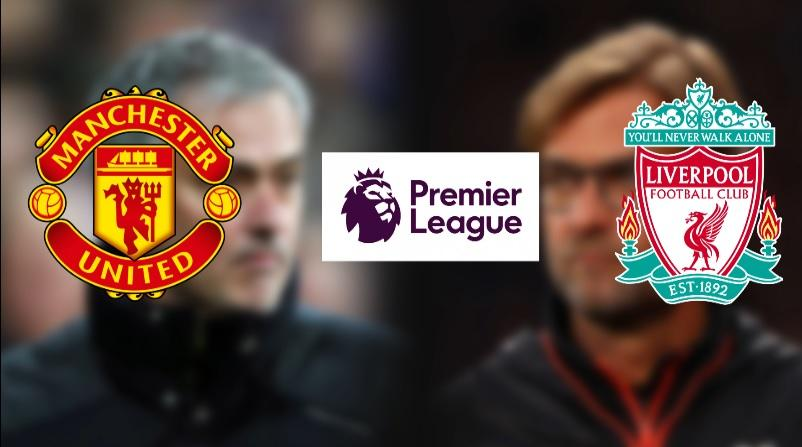

Nowy zawodnik!!
Pojawił się nowy zawodnik w klubie!!!

Kolejna kontuzja w zespole :/
Rojo wypada na 2 tygodnie!

United w 1/4 LM!
Dzisiejszego wieczoru na Old Trafford w meczu reważnowym United pokonali Sevillę 3:1 dzięki czemu przypieczętowali swój awans do ćwierćfinału ligi mistrzów.
Kliknij i zobaczZapowiedź meczu z Liverpoolem
W sobotnie popołudnie ekipa Jose Mourinho podejmię drużynę Jurgena Kloppa. 
Kliknij i zobacz